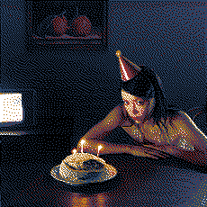

delulu - lexie liu
type: single
genres: electropop, drum n bass
date released: 21 november 2023
ever since i listened to the happy star i've been keeping tabs on this artist!
this single of theirs has been so addicting the more i listen to it tbh... it scratches my brain SOOOO good. the dnb throughout the chorus?? OH YEAH!!!! i genuinely love this.
rating: 

listened on 21.nov.23, published 05.dec.23
picture from apple music nz
time-lapse - yukika
.png)
type: EP, cover album
genres: city pop
date released: 1 december 2023
THE SUN IS SHINING  , THE BIRDS ARE SINGING
, THE BIRDS ARE SINGING  , AND YUKIKA JUST RELEASED NEW MUSIC!
, AND YUKIKA JUST RELEASED NEW MUSIC! 
oh life is so wonderful. to have a FULL ON city pop from yukika feels like a dream come true. i think it's a very nice touch that all the lyrics (of the japanese songs) were translated to korean for the covers! i waited for it to be nighttime in my timezone just so i could listen to this with the INTENTED atmosphere and wow 
that was so beautiful.... the title track, 가까이 하고 싶은 그대 (i want to be closer to you) just makes me feel like i am falling in love all over again i even got emotional while listening to this because of the news that this might be her very last album ... 
when i saw this, i'm not gonna lie i got a bit sad that this might be it for her discography, as someone who very much LOVES her music. nonetheless, i am always going to be happy for her :) no matter where she goes. i have talked about this in my fav albums page under soul lady, but yukika is the reason why i got SO into k-pop (though i've been feeling quite detached from it nowadays ha ha...) AND her soul lady album was one of the first albums i ever bought physically just because i love it so so so much. i've always loved yukika's music and her take on city pop. i think she has such a lovely voice, and shes so charming ^.^
.png)
at the end of the day, i am happy she's doing whatever she wants to do! i will always be happy for her and cherish the music she has given us. thank you yukika!
also the youtube MV is so so so lovely!!! let's all watch it and be happy.
links: youtube EP playlist
highlights: 가까이 하고 싶은 그대, how to love (intro), remember summer days, telephone number, night in memories
rating:
listened on 01.dec.23, published 01.dec.23
pictures from yukika's teasers. no text version from @YukikaGlobe